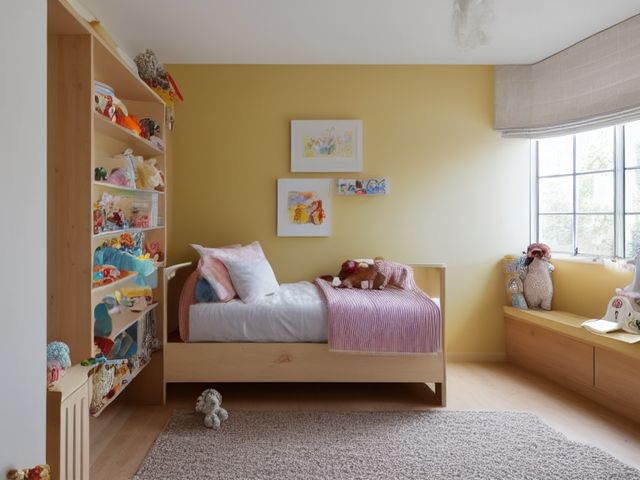

Kids Bedroom micro zone
The Bed and Sleep Zone
The place a child winds down and sleeps, and nothing else.
One session: 30-45 min. most of it in Shine, once the mattress and the floor under the bed are stripped back

What done looks like
Duvet pulled flat with one pillow squared at the head. Three or four stuffed animals on the bed, the rest sitting in an open basket at the foot where they can still be seen. Nightlight cord run behind the bed leg. A clear walkable path from the pillow to the door, wide enough to cross in the dark without looking down.
Check these before you start
- Poison, choke, or strangleBlind cords and cord loops within reach of a pillow. Cleat them above child height or fit a cordless blind.
- FallA bag, a bin or a pile of books between the bed and the door turns a half asleep bathroom trip into a fall.
What to have on hand before you start
These are types of thing, not brands. If you already own something that does the job, that is the right one to use. Each says which pass needs it and what to watch out for.
- Color-coded microfiber cloth set ×12
Wipe, dust, and dry surfaces, in the Shine pass.
Wash by use color; avoid fabric softener. - Neutral pH multi-surface cleaner
Routine cleaning of sealed surfaces, in the Shine and Sustain passes.
Verify surface compatibility; lock around children and pets. - Compact vacuum with attachments
Remove dust, crumbs, and debris, in the Shine pass.
Use appropriate attachment. - Keep, Relocate, Donate, Recycle, Trash container set ×5
Support rapid item routing during Sort, in the Sort pass.
Do not block exits. - Portable cleaning caddy
Transport and contain cleaning inputs, in the Straighten, Shine and Sustain passes.
Secure chemicals from children and pets. - Portable label maker
Create durable standardized labels, in the Standardize and Sustain passes.
Follow surface and adhesive guidance. - Removable write-on labels
Create temporary or adjustable visual controls, in the Standardize pass.
Test on delicate finishes.
Only if your bed has one: 8 more
Not every bed needs these. Each one is here because some do, and the reason is next to it.
- Jewelry and Valet Tray
Contain small personal items, in the Straighten, Standardize and Sustain passes.
Do not overload; anchor wall-mounted or tall systems where required. - Portable Project Tray ×2
Contain one active project and its parts, in the Straighten, Standardize and Sustain passes.
Do not overload; anchor wall-mounted or tall systems where required. - Folding Laundry Basket ×3
Move clean laundry back to rooms, in the Straighten, Standardize and Sustain passes.
Do not overload; anchor wall-mounted or tall systems where required. - Laundry Hamper Sorter
Separate laundry by household method, in the Straighten, Standardize and Sustain passes.
Do not overload; anchor wall-mounted or tall systems where required. - Remote Control Tray
Create one visible home for controls, in the Straighten, Standardize and Sustain passes.
Do not overload; anchor wall-mounted or tall systems where required. - Charging Dock
Create one controlled device charging home, in the Straighten, Standardize and Sustain passes.
Do not overload; anchor wall-mounted or tall systems where required. - Toy Bin with Picture Label ×4
Support independent child cleanup, in the Straighten, Standardize and Sustain passes.
Do not overload; anchor wall-mounted or tall systems where required. - Front-Facing Book Bin ×2
Display children's books for easy access, in the Straighten, Standardize and Sustain passes.
Do not overload; anchor wall-mounted or tall systems where required.
The six passes, in order
Work them in this order. Sorting after you have arranged things means arranging things you were about to remove.
Sort
Decide what stays. Everything else leaves the zone now.
Pull every stuffed animal out onto the floor and count what was actually in the bed. A child sleeps with a handful, not a herd, and the rest are drift from birthdays and fair prizes.
Straighten
Give what stays a home, placed where the hand actually reaches.
Give them bedding they can handle alone. One duvet in a washable cover beats a top sheet plus blanket plus quilt, because making the bed becomes a single pull instead of four layers a seven year old will never line up.
Shine
Clean it, and use the cleaning to inspect what you cannot see when it is full.
Strip the bed, vacuum the mattress, and get the strip of floor under it that nobody has seen since the frame went in. Wipe the headboard and the nightlight casing where hands land every night.
Surface by surface, all 7 of them, with what to use on each.
Safety
Make the zone safe for everybody who uses it, including the shortest person.
Blind and blackout cords hanging near a bed head are a strangle risk at exactly the wrong height. Cleat them high on the wall or change to a cordless blind. Then check the bed to door route, because a night trip to the bathroom should not end over a toy bin.
Standardize
Write down the best way you know today, so it survives you forgetting.
Tape one photo of the made bed inside the wardrobe door at the child's eye height. Match the picture is a standard a six year old can meet on their own, with no adult needed to rule on what made means.
Sustain
Attach the reset to something that already happens, so it keeps itself.
The bed gets made while the school bag goes onto the shoulder, before anyone leaves the room. A duvet you can pull flat in one movement is the only version of this that survives a school morning.
The animals that never get picked
You already know which two or three actually get slept with. The decision you have been avoiding is not whether to thin the rest, it is whether you are allowed to do it without them. Split it: the child picks the sleepers, you handle the drift, and nothing leaves the house the same day it leaves the bed. Put the rest in a lidded box in the wardrobe for six weeks. If nobody asks for a single one, the box goes quietly. If they ask for one by name, that one comes back and the rest still go. The box is what lets you be decisive without being cruel.
Cleaning it properly, surface by surface
Shine this zone from the pillow down to the floor the frame hides. Work top to bottom, strip everything soft off first, and finish with the strip of carpet under the bed that nobody has seen since the frame went in. The thing people miss is the mattress itself.
Work down, not across. Whatever comes off a high surface lands on the one below it, so cleaning the floor first means cleaning it twice.
Carry these in with you. Compact vacuum with attachments; Color-coded microfiber cloth set; Neutral pH multi-surface cleaner; Floor-material-compatible cleaner; Portable cleaning caddy.
- The bedding: duvet, cover, pillow and pillowcase
Strip it all first. Wash the sheet, cover and pillowcase on the hottest wash the fabric allows, and air the pillow. Remake the bed only once the mattress and frame below are done, so nothing clean goes back onto grit. - The mattress, top face and both sides
Vacuum the whole top and the seams with the upholstery attachment, working the piping where skin and dust settle. Stand the mattress on edge and vacuum the underside, then flip or rotate it end to end so the same patch is not always slept on. - The headboard and the bed rails
Damp cloth with a little neutral pH cleaner, top rail first because that is where hands and gums land every night, then down the uprights and along the side rails. Dry it off so no damp sits in the joints. - The nightlight casing and the shade
Dry microfiber cloth over the casing to lift dust, then a barely damp cloth on the plastic. A dusty nightlight throws a dimmer, warmer light, so this is worth doing properly. - The stuffed animals and their basket
Machine or hand wash the fabric ones on a gentle wash and let them dry fully before they return. Wipe any hard plastic faces or eyes with a damp cloth. Tip the basket out, vacuum the inside, and wipe the rim where small hands grab it. - The bed frame legs and the floor underneath
Wipe each leg down with the neutral pH cleaner. Then pull the bed out or reach right under with the vacuum crevice tool and clear the long strip of dust and lost toys under the slats. On a hard floor, follow the vacuum with a damp mop and the floor-material-compatible cleaner. - The walkable path from the pillow to the door
Vacuum the run of carpet the child crosses in the dark, or mop it with the floor-material-compatible cleaner if it is hard floor. This is the lane that has to stay clean and clear, so leave nothing drying on it.
Inspect as you clean. Cleaning is the only time you see the zone empty, so use it.
- A damp patch or a musty smell in the mattress or the slats, which points to a spill or bed-wetting soaking in, or a mattress that never gets to dry. Flag it.
- A slat or a frame joint that gives or creaks when you lean on it while vacuuming underneath, meaning a bolt has worked loose over months of use.
- A frayed or nicked nightlight flex, or a plug that feels warm or looks discoloured, noticed while you wipe the casing.
- Soft dark spots in the corner where the headboard meets an outside wall, the first sign of condensation mould.
- A carpet gripper or a floorboard nail lifting proud under the bed, found the moment you reach in with the vacuum.
The standard that keeps it fixed
One duvet, one pillow, and the animals that fit in two arms in a single trip. The photo inside the wardrobe door says what made looks like.
Reset trigger. Bed made while the school bag goes on, every morning, before the bedroom door closes.
The rest of the kids bedroom, in working order
Each of these is one session on its own. Finish this zone before you open the next.
- The Bed and Sleep Zone, you are here
- The Toy Storage Zone
- The Study Desk
- The Clothing Closet
- The Dresser Drawers
- The School and Activity Launch Zone
The Kids Bedroom in full, with what each of the 6 zones is for
Related reading
- What is 6S?
- This zone's safety pass, in full
- Is one spot in this zone always the one you skip?
- Why this zone gets messy again
- Decluttering vs. organizing
- Before you buy storage for this zone
- Still does not fit, even after the honest count?
- Does something in this zone actually get used somewhere else?
- Stuck on one item in this zone?
- Written the standard, but nobody else follows it?
- Does everyone in the house agree what "done" looks like here?
- Does more than one person use this zone?
- Found a duplicate of something in this zone?
- Why the standard above names one home per category
- Is the everyday item in this zone actually the easy one to reach?
- Not sure whether to keep something in this zone?
- Does this zone keep running out of something?
- Started this zone and stalled partway through?
- Have you stopped noticing the clutter in this zone?
When you want it off the screen
Carry The Bed and Sleep Zone into the room
The method above is complete and free. The Whole House Print Pack puts The Bed and Sleep Zone and the other 113 micro zones on 684 printable cards, so the steps you just read are not stuck behind a phone screen while your hands are full.
The Print Pack, 19 dollarsJust this zone, 4 dollarsOr draw a card free
The Bed and Sleep Zone on its own is 4 dollars for 6 cards. All 114 micro zones is 19 dollars for 684. The whole house is the better buy; the single zone is here so you can take only what you are working on.
If The Bed and Sleep Zone keeps fighting back, the real problem usually sits somewhere else in the room. A one hour virtual consult is 250 dollars: we find the function, the friction and the root cause together, and you keep a written standard for the space. See what a consult covers.